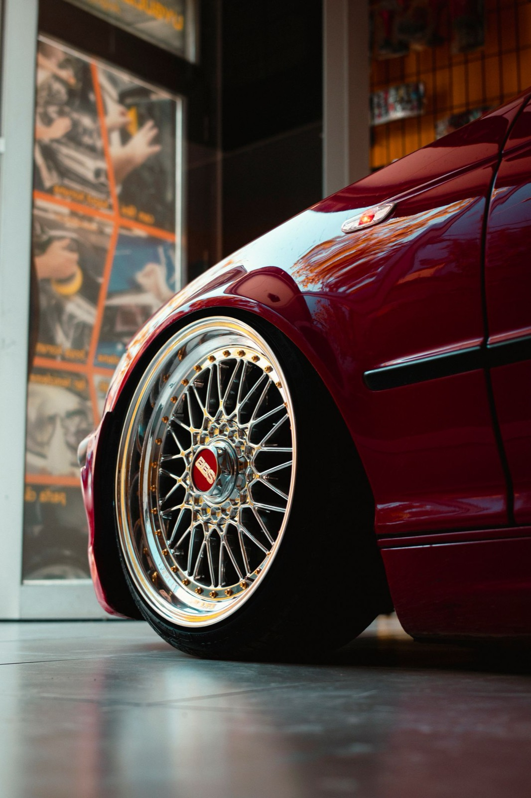
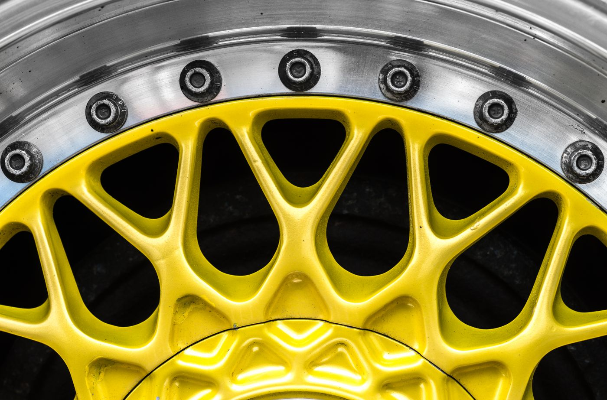
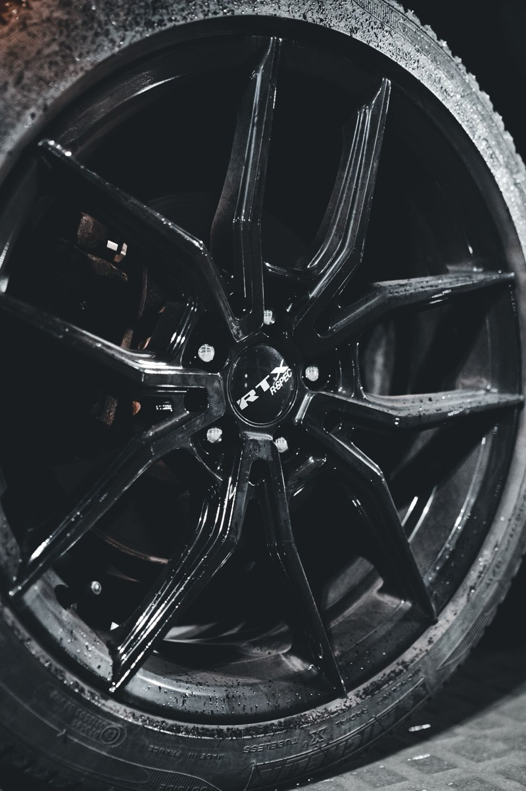
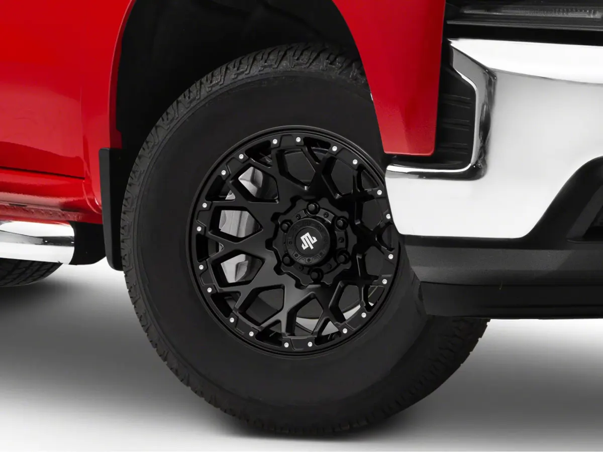
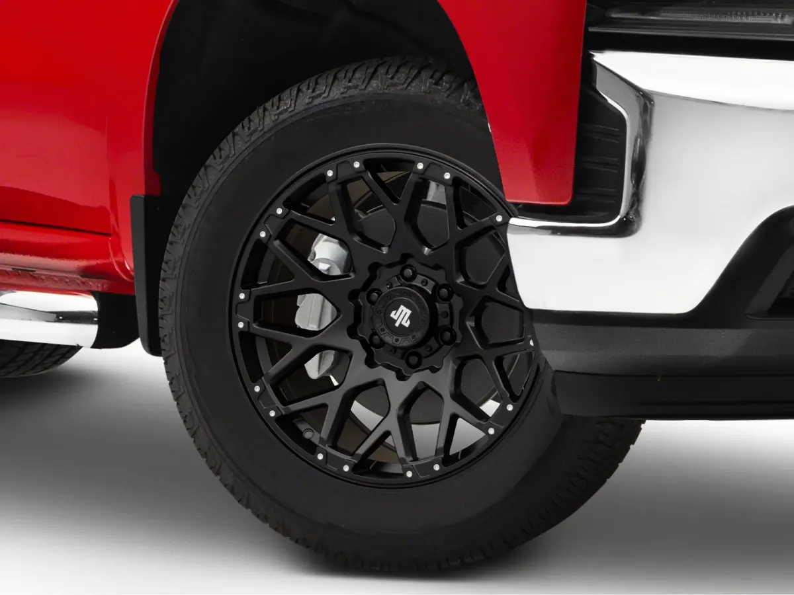
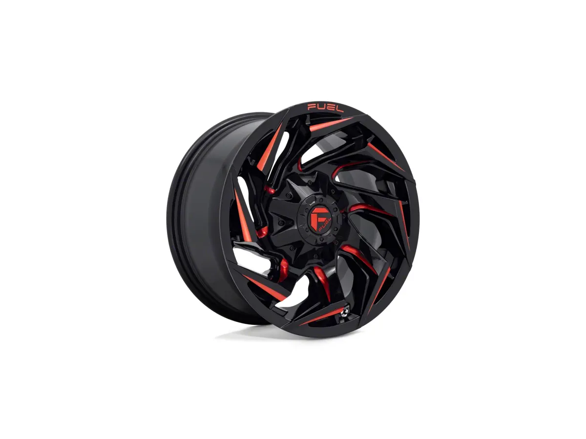

Aftermarket Wheels: Offset, Width, and the Numbers That Decide Fitment
Wheels are the single most visible modification you can make, and also the one where a bad purchase is hardest to undo. A wheel that fits wrong can rub through a fender liner, destroy a wheel bearing, or make the car feel worse than stock. The good news is that the decision comes down to four number

Wheels are the single most visible modification you can make, and also the one where a bad purchase is hardest to undo. A wheel that fits wrong can rub through a fender liner, destroy a wheel bearing, or make the car feel worse than stock. The good news is that the decision comes down to four numbers, and once you understand them, most of the marketing becomes noise.
The four numbers
Diameter. The wheel’s height in inches. Changing diameter changes tire sidewall height if you want to keep the overall rolling diameter constant, which you almost always do.
Width. Measured between the bead seats, in inches. Width determines what tire section width you can run. Each tire has a recommended wheel width range; going outside it means a pinched or stretched sidewall and unpredictable handling.
Offset (ET). The distance from the wheel’s mounting face to its centerline, in millimeters. Positive offset tucks the wheel inward, negative pushes it outward. This is the number that decides whether your wheel fits. Wrong offset is the cause of nearly every rubbing and clearance problem. It’s also what changes steering feel — a big offset change alters the scrub radius, which is the geometry that determines how the steering self-centers and how the tire wears.
Bolt pattern (PCD). The number and spacing of the lug holes, e.g. 5×114.3. It must match your hub exactly. Adapter spacers exist but add a failure point and are illegal in some jurisdictions. Avoid them.
Also check center bore (hub diameter). If the wheel’s bore is larger than the hub, you need hub-centric rings, or the wheel locates on the studs alone, which causes vibration.

Fitment, Measured Not Guessed
The reliable way to know whether a wheel fits is to measure your current setup and model the change:
- Note your stock wheel width and offset (stamped on the inside of the wheel or in the door jamb sticker).
- Decide the new width and offset.
- Calculate the change in inner and outer clearance:
- Inner edge moves by:
(newWidth − oldWidth)/2 − (newOffset − oldOffset), converted to mm. - Outer edge moves by the same magnitude in the opposite direction. - Compare against the gap you actually have, measured with a tape under the car at full steering lock and full compression.
A fitment calculator does this arithmetic for you, but the measurement is what makes it real. What clears on a lift at stock height often rubs when the suspension compresses.

Construction: cast, flow-formed, forged
Cast. Molten aluminum poured into a mold. Cheapest, heaviest, and least ductile. Fine for a street car on good roads, but a cast wheel is more likely to crack rather than bend on a hard impact.
Flow-formed (also called flow-formed, rotary-forged, or spun). A cast center with the rim section spun and pressed under heat, which aligns the grain structure. Typically 15–25% lighter than a comparable cast wheel at a modest price premium. This is the sweet spot for most people — you get most of the weight benefit without forged pricing.
Forged. Machined from a solid billet or forged under high pressure. Strongest and lightest, and priced accordingly, often 2–3× flow-formed. Worth it for track use where unsprung mass and strength both matter, less so for a daily.
Weight is worth caring about because it’s unsprung and rotating. Rough rule of thumb: 1 lb removed from rotating wheel mass is worth roughly 3 lb of static vehicle mass for acceleration. Lighter wheels also improve ride quality because the suspension has less mass to control over bumps.

What to check before you buy
- Load rating. Each wheel has a rated load. The wheel’s rating × 4 must exceed your vehicle’s gross weight with margin. This matters enormously on trucks, SUVs, and anything that tows. An under-rated wheel can fail catastrophically loaded.
- TPMS compatibility. Most modern cars need the tire pressure sensors transferred or replaced. Budget for this.
- Lug hardware. Aftermarket wheels often need different lug nuts (conical vs. ball seat, or tuner-style). Using the wrong seat type damages the wheel and can loosen.
- Brake clearance. Big brake kits and large factory brakes may not clear the wheel’s inner barrel. Check spoke profile, not just diameter.
- Certification. Look for JWL/VIA (Japan), TÜV (Germany), or SAE J2530 testing. Certification is not a guarantee of quality, but absence of it on a cheap wheel is a warning.
Sizing philosophy by vehicle type
Sports car / Japanese / German performance. Stay close to stock offset. Adding 10mm of track width is usually safe and improves turn-in feel slightly; going 25mm+ starts to affect scrub radius, bump steer, and bearing life. If you want the wide look, buy a wider wheel with correct offset rather than a spacer.
Sedan / daily driver. Prioritize weight and ride. Going up one inch in diameter with a shorter sidewall is a style choice that costs comfort and increases pothole damage risk. A flow-formed wheel in stock size is often the best real-world upgrade.
Truck / SUV. Load rating first, weight second, looks third. Heavy all-terrains on heavy cast wheels create a lot of unsprung mass and you feel it in ride and braking.
Order of operations
Buy for correct fitment first. A wheel that fits properly and is 2 lb heavier than the ideal will give you a better car than a lighter wheel with the wrong offset. Get the offset right, verify load rating, use hub-centric rings and correct lug hardware, then choose construction based on budget. Everything else is aesthetics, and aesthetics are a legitimate reason. Just don’t let them override the numbers.
Wheels with the numbers spelled out
Prices and review counts as the listings showed them on 4 November 2026. Offset is listed on every one of these, which is the point — a wheel listing without an offset number is a wheel listing you cannot evaluate.

Mammoth Vex, 17x9, −6mm Offset (19–26 Silverado 1500)
A 17-inch wheel is the sensible answer for a truck on 33s: more sidewall, cheaper tyres, and better pothole survival than a 20. The −6mm offset pushes the wheel slightly outboard of stock, which is the mild stance most people are actually after and is far enough from the extremes to keep the scrub radius sane.
At this price it is a cast wheel, not flow-formed. Accept that: it will be heavier than a $400 wheel and heavier is worse for ride and braking. On a truck that already weighs 5,000 lb, that penalty is small in proportion.
- Price
- $199.99 each
- Size
- 17x9
- Offset
- −6mm
- Bolt pattern
- 6-lug
- Owner reviews
- 52
See the Mammoth Vex 17x9 → list price checked 4 Nov 2026

Mammoth Vex, 20x9, −6mm Offset (19–26 Silverado 1500)
The same wheel in 20-inch, holding the same −6mm offset. That consistency matters: changing diameter without changing offset keeps the geometry you already checked, which is exactly the discipline this article argues for. Two inches of diameter costs you sidewall and tyre price.
52 reviews is enough to see whether a wheel has a fitment or finish problem, and this one does not obviously have either.
- Price
- $269.99 each
- Size
- 20x9
- Offset
- −6mm
- Bolt pattern
- 6-lug
- Owner reviews
- 52
See the Mammoth Vex 20x9 → list price checked 4 Nov 2026

Fuel Wheels Reaction, 20x10, −18mm Offset (19–26 Silverado 1500)
Fuel is the name people buy when they want the wheel to be the last thing they think about, and this is the pick if you are putting real weight on the truck. The −18mm offset is a genuine wide-stance number — it will push the tyre outboard, it will change the scrub radius, and you should expect to look at whether it clears your fender liner at full lock.
Twice the price of the Mammoth and only 7 reviews, so the evidence base is thin. You are buying reputation and a load rating here, not a review score.
- Price
- $525.00 each
- Size
- 20x10
- Offset
- −18mm
- Bolt pattern
- 6-lug
- Owner reviews
- 7
See the Fuel Reaction → list price checked 4 Nov 2026
None of them states a load rating, a weight, or a construction method (cast vs flow-formed vs forged) in the visible listing copy. Those are the three numbers this article says to decide on, so ask the seller for them before you order rather than assuming price implies quality.
We have not weighed or tested any of these wheels. Review counts are reported instead of average scores because star ratings render inconsistently across these pages.